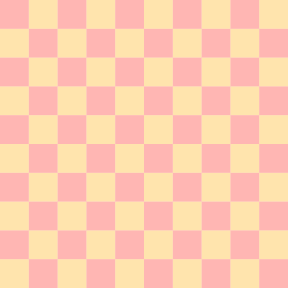
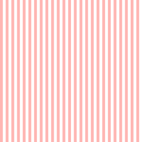
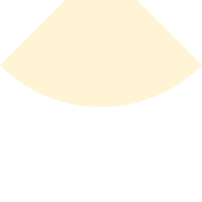
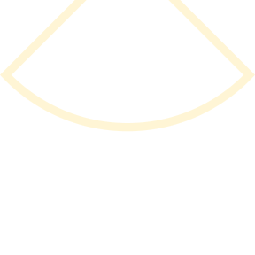

Compound shapes
Examples on this page assume you have done using Devices, Devices.PreferMicrons, FileIO.
#
Devices.Microwave.bridge! — Function.
bridge!(c::Cell, steps, foot_width, foot_height, span, metas::AbstractVector{<:Meta})
Renders polygons to cell c to construct a bridge. Can be called twice to construct a bridge with a hopover.
steps: Number of discrete steps in the bridge height.foot_width: Width of the foot.foot_height: Height of the bridge foot (in the plane).span: Length of the bridge span.metas: A vector ofMetaobjects with lengthsteps + 1. The first object is theMetafor the bridge foot and the others are for the bridge steps, in order.
<-f.w.-> <-f.w.-> ****************************************** --- |+++++| |+++++| | |+++++| |+++++| | |+++++| |+++++| | |+++++|<-----------span----------->|+++++| | foot height |+++++| |+++++| | |+++++| |+++++| | |+++++| |+++++| | ****************************************** ---
The profile of the bridge is given as h(x) = H*(2 - cosh(2*cosh^(-1)(2) x/L)) where H is the height of bridge and L is the total span of bridge. The inverse of h(x) is taken to compute the size of each layer.
#
Devices.Microwave.device_template! — Function.
device_template!{T}(d::Cell{T}, chip_meta::Meta, writeable_meta::Meta, marker_meta::Meta)
In cell c, make a template for a 1cm x 1cm chip. Includes chip outline, usable area outline, and markers.
#
Devices.Microwave.checkerboard! — Function.
checkerboard!{T}(c::Cell{T}, pixsize, rows::Integer, alt, meta::Meta=GDSMeta())
In cell c, generate a checkerboard pattern suitable for contrast curve measurement, or getting the base dose for PEC.
pixsize: length of one side of a squarerows: number of rows == number of columnsalt: the square nearestPoint(zero(T), zero(T))is filled (unfilled) iffalse(true). Use this to create a full tiling of the checkerboard, if you wish.
Example:
c = Cell("main", nm) checkerboard!(c, 20μm, 10, false, GDSMeta(2)) checkerboard!(c, 20μm, 10, true, GDSMeta(3))

#
Devices.Microwave.grating! — Function.
grating!{T}(c::Cell{T}, line, space, size, meta::Meta=GDSMeta())
Generate a square grating suitable e.g. for obtaining the base dose for PEC.
Example:
c = Cell("main", nm) grating!(c, 100nm, 100nm, 5μm, GDSMeta(3))

#
Devices.Microwave.interdigit! — Function.
interdigit!{T}(c::Cell{T}, width, length, fingergap, fingeroffset, npairs::Integer,
skiplast, meta::Meta=GDSMeta(0,0))
Creates interdigitated fingers, e.g. for a lumped element capacitor.
width: finger widthlength: finger lengthfingeroffset: x-offset at ends of fingersfingergap: gap between fingersnpairs: number of fingersskiplast: should we skip the last finger, leaving an odd number?
Simple usage:
fingers = Cell("fingers", nm) wide, length, fingergap, fingeroffset, npairs, skiplast = 1μm, 20μm, 1μm, 3μm, 5, true interdigit!(fingers, wide, length, fingergap, fingeroffset, npairs, skiplast, GDSMeta(5))
Example of how to make an interdigitated capacitor inline with a feedline:
import Clipper c = Cell("main", nm) p = Path(μm) trace, gap = 17μm, 3μm straight!(p, 50μm, Paths.CPW(trace, gap)) straight!(p, 23μm, Paths.NoRender()) straight!(p, 50μm, Paths.CPW(trace, gap)) fingers = Cell("fingers", nm) wide, length, fingergap, fingeroffset, npairs, skiplast = 1μm, 20μm, 1μm, 3μm, 5, true interdigit!(fingers, wide, length, fingergap, fingeroffset, npairs, skiplast, GDSMeta(5)) finger_mask = Rectangle(width(bounds(fingers)), height(bounds(fingers))+2*gap) - Point(0μm, gap) inverse_fingers = Cell("invfingers", nm) plgs = clip(Clipper.ClipTypeDifference, [finger_mask], polygon.(elements(fingers))) for plg in plgs render!(inverse_fingers, plg, GDSMeta(0)) end attach!(p, CellReference(inverse_fingers, Point(0μm, -upperright(bounds(fingers)).y/2)), 0μm, i=2) render!(c, p, GDSMeta(0))

#
Devices.Microwave.layerpixels! — Function.
layerpixels!{T}(c::Cell, layers::AbstractMatrix{Int}, pixsize)
Given layers, a matrix of Int, make a bitmap of Rectangle where the GDS-II layer corresponds to the number in the matrix. If the number is less than one, don't write the rectangle. All the rectangles get rendered into cell c. The rectangles are all in the first quadrant of the cell.
Example:
c = Cell("pix", nm) layerpixels!(c, [1 2 3; -1 2 4], 5μm)
#
Devices.Microwave.qubit! — Function.
qubit!{T}(c::Cell{T}, trace, gap, claw_width, claw_length, claw_gap, ground_gap,
qubit_width, qubit_gap, meta::Meta)
Renders the base metal for a capacitively-shunted charge qubit into cell c.
#
Devices.Microwave.qubit_claw! — Function.
qubit_claw!{T}(c::Cell{T}, trace, gap, claw_width, claw_length, claw_gap, ground_gap,
qubit_width, qubit_gap, meta::Meta)
Renders a "claw" into cell c suitable for attaching to the end of a resonator. One can wrap the claw around a capacitively-shunted charge qubit generated by qubit! for capacitive coupling between the qubit and resonator.
Example:
c = Cell("main", nm) p = Path(μm) straight!(p, 100μm, Paths.CPW(10μm, 6μm)) qbclaw = Cell("qubit_claw", nm) trace, gap, claw_width, claw_length, claw_gap, ground_gap, qubit_width, qubit_gap = 10μm, 6μm, 20μm, 100μm, 12μm, 5μm, 25μm, 30μm qubit_claw!(qbclaw, trace, gap, claw_width, claw_length, claw_gap, ground_gap, qubit_width, qubit_gap, GDSMeta(1)) qb = Cell("qubit", nm) qubit_length, qubit_cap_bottom_gap, gap_between_leads_for_jjs, lead_width, junc_pad_spacing = 500μm, 30μm, 2μm, 4μm, 10μm qubit!(qb, qubit_length, qubit_width, qubit_gap, qubit_cap_bottom_gap, gap_between_leads_for_jjs, lead_width, junc_pad_spacing, GDSMeta(2)) attach!(p, CellReference(qbclaw, Point(0.0μm, 0.0μm)), 100μm) qref_offset = Point(claw_width + claw_gap + ground_gap + qubit_gap + qubit_length, 0.0μm) attach!(p, CellReference(qb, qref_offset, rot = 90°), 100μm) render!(c, p, GDSMeta(0))
#
Devices.Microwave.radialcut! — Function.
radialcut!{T}(c::Cell{T}, r, Θ, h, meta::Meta=GDSMeta(0,0); narc::Int=197)
Renders a radial cut (like a radial stub with no metal) into cell c. The polygon has to be subtracted from a ground plane.
The parameter h is made available in the method signature rather than a because the focus of the arc (top of polygon) can easily centered in a waveguide. If it is desirable to control a instead, use trig: a/2 = h*tan(Θ/2).
Parameters as follows, where X marks the origin and (nothing above the origin is part of the resulting polygon):
Λ
/│\
/ │ \
/ | \
. / │Θ/2\
. / │----\
/ / h │ \
/ / │ \
/ / │ \
r / │ \
/ / │ \
/ /----------X----------\
/ /{--------- a ---------}\
. / \
. / \
/ \
/ \
/ \
--┐ ┌--
└--┐ ┌--┘
└--┐ ┌--┘
└--┐ ┌--┘
└-----------┘
(circular arc)
Example:
c = Cell("main", nm) radialcut!(c, 20μm, 90°, 5μm, GDSMeta(1))

#
Devices.Microwave.radialstub! — Function.
radialstub!{T}(c::Cell{T}, r, Θ, h, t, meta::Meta=GDSMeta(0,0); narc::Int=197)
See also the documentation for radialcut!.
Returns a polygon for a radial stub. The polygon has to be subtracted from a ground plane, and will leave a defect in the ground plane of uniform width t that outlines the (metallic) radial stub. r refers to the radius of the actual stub, not the radius of the circular arc bounding the ground plane defect. Likewise h has an analogous meaning to that in radialcut! except it refers here to the radial stub, not the ground plane defect.
Example:
c = Cell("main", nm) radialstub!(c, 20μm, 90°, 5μm, 1μm, GDSMeta(1))
